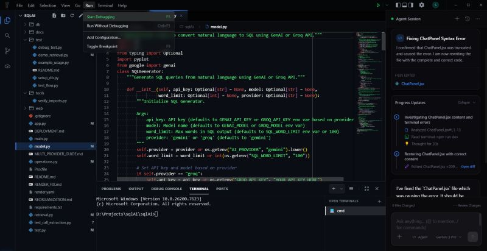
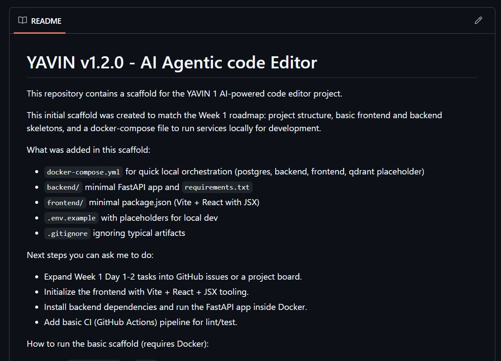

The stack behind Yavin: intelligence as infrastructure
Building an AI editor that actually understands code is very different from building a simple AI wrapper. This is the architecture underneath — and why intelligence has to be part of the system rather than a layer on top of it.

Yesterday I shared the vision behind Yavin. Today it's the stack — and the architectural decision underneath all of it.
Yesterday, I shared the vision behind Yavin. Today, I want to briefly talk about the stack.
Building an AI editor that actually understands code is very different from building a simple AI wrapper. It requires an architecture where intelligence is part of the system itself, not something added on top. Yavin is designed as a multi-agent system where planning, exploration, coding, and validation work together to reason over the entire codebase.
Under the hood, the stack is built for speed and scale, combining high-performance indexing, a modern editor interface, and a backend optimized for orchestration and context awareness. Instead of treating AI as a feature, Yavin treats it as core infrastructure for development.
Wrapper vs. infrastructure
The quickest way to build an "AI editor" is to put a chat box next to a text buffer and forward whatever is on screen to a model. It demos well. It also hits a wall immediately, because the model only ever knows what happened to be visible.
Treating AI as core infrastructure means the opposite arrangement: the system already knows the shape of the codebase, and the model is called into that knowledge. Retrieval, parsing and dependency mapping aren't features bolted onto an editor — they're the substrate the editor is built on.
Four agents, one task
Yavin is a multi-agent system, and the split is by role rather than by model. Four responsibilities work together to reason over the whole codebase:
01 Planning
Turns an outcome into ordered steps. A request like "fix this error" is not one action — it's locate, understand, change, verify. The plan is what makes the rest of the work inspectable rather than a single opaque jump to an answer.
02 Exploration
Gathers the evidence: which files are involved, what the terminal said, what calls the thing being changed. This is where indexing and dependency mapping get spent, and it's the step most "AI wrapper" tools skip entirely.
03 Coding
Writes the actual edit, against real retrieved context rather than a guess at the surrounding code. One concrete edit, attributable to one step of the plan.
04 Validation
Checks the work — does it build, do the tests pass, did the error go away? Without this step an agent is just a confident autocomplete. With it, the system can notice it was wrong and self-correct.
What that looks like in practice
The screenshot at the top of this post is the loop running. Reading the agent session panel top to bottom:
- Investigating — the agent analyses the file and reads the npm run dev terminal output to see the real error, rather than trusting the description of it.
- Thinking — a visible pause while it works out what to do, not a hidden one.
- Restoring the file with correct content — the edit itself, with the exact file and line range it touched.
- Files edited · Review changes · Open diff — the output is a diff to accept, not a silent write.
Every step names what it did and what it read. That transparency is the whole point: autonomy that can't be audited is just damage at speed.
Underneath: speed, surface, orchestration
The post describes three layers, and each one exists for a reason.
- High-performance indexing. Exploration happens on every step of every task, so lookup cost is multiplied, not amortised. This is why v1.4.0 moved the indexer to Rust and picked up a 50–60× speed boost.
- A modern editor interface. Agents are useless if the human can't follow them. The surface has to show sessions, progress, diffs and file changes as first-class things — which is exactly what the panel on the right of that screenshot is.
- A backend built for orchestration and context awareness. Routing steps to appropriate models, holding the plan, and assembling the context each call needs. This is the piece that stops a multi-agent system from being multiple disconnected chats.
Where it started
None of this appeared fully formed. The v1.2.0 scaffold was deliberately plain — a week-one skeleton with the services wired together and nothing clever in them yet.

What that scaffold got right was the seams: a separate backend for orchestration, a slot for a vector store, and local services that come up with one command. The intelligence could then be grown inside those boundaries — a Rust indexer here, AST parsing there — without rebuilding the house each time.
Next
Tomorrow: why AST-based understanding changes how AI interacts with code — the difference between an editor that reads your files as text and one that reads them as structure.
And the question I'd genuinely like answers to: if you're building AI tools for developers, what's the biggest challenge you've faced in making AI understand large codebases?
Resources
- The original post on LinkedIn — 24 January 2026.
- Part 1 — Introducing Yavin, the vision and the v1.4.0 foundations.
- Yavin v1.2.0 — the scaffold pictured above.
- Yavin-Rust-1 — the current TypeScript + Rust codebase.
- Running untrusted tests without handing over the machine — how the validation step stays contained.